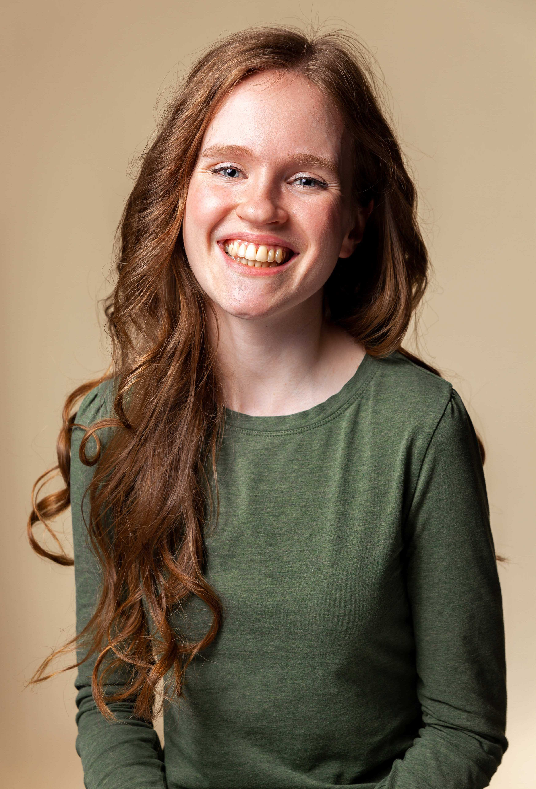

Voice Lessons | Let's sing!
I am a singer and vocal coach based in Greater Vancouver. My priority is to create a safe space for singing, because I understand that singing can be intimidating! I love seeing students grow in confidence, skill, and the assurance that their unique voices matter.
After taking private voice lessons for 10 years, I'm continuing my education by pursuing an ARCT from the Royal Conservatory of Music. At Trinity Western University, I sang in the Chamber Choir and graduated with a BA in Worship Arts with Great Distinction. I have also taught musical theatre for kids and teens around the Lower Mainland of BC.
Fun fact: most people call me Ellie, but my full name is Aurelia. It's pronounced "or-RAY-lee-ah" and means "golden!"